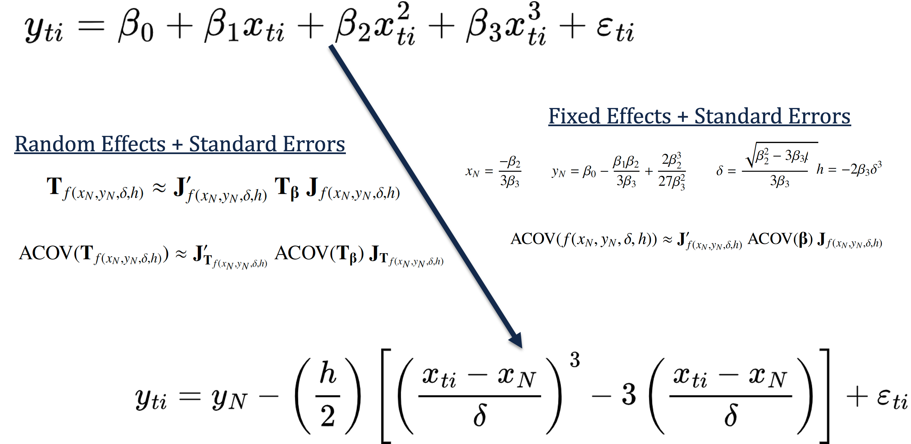
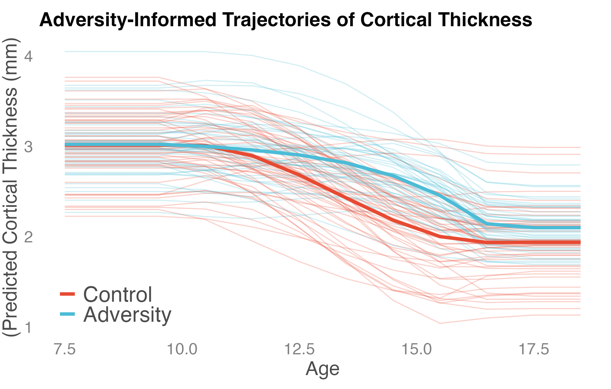
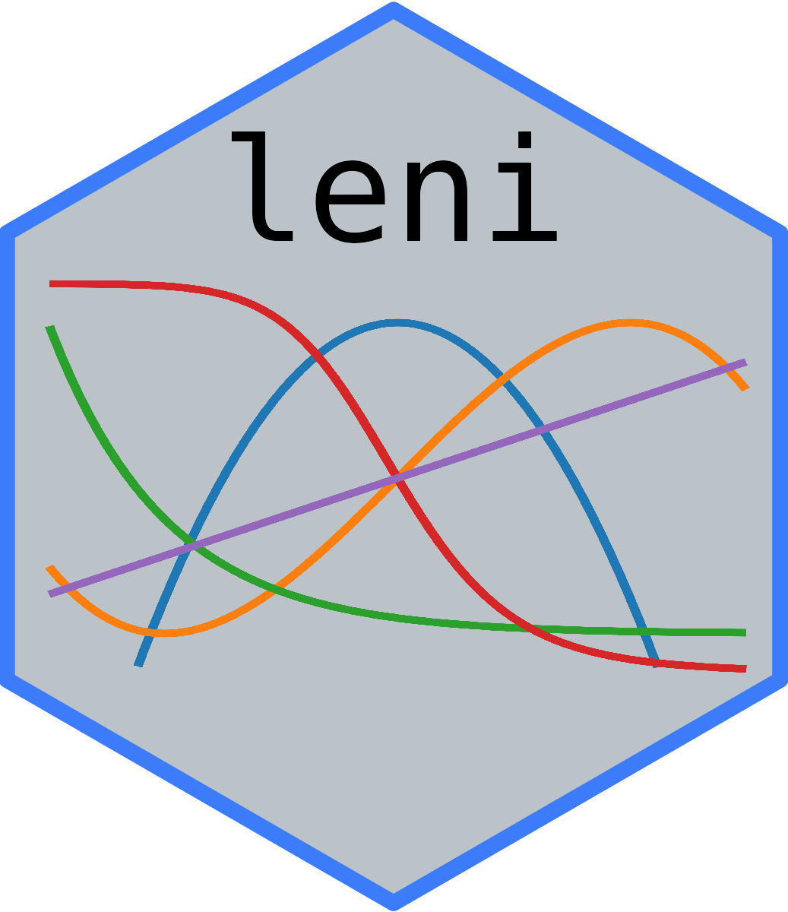
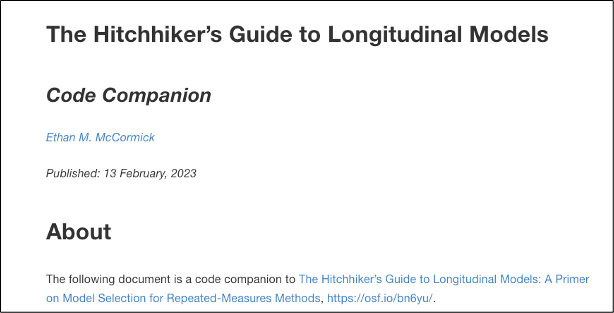

Ethan M. McCormick
Jump to: Selected Research | Student Projects | Software & Resources | Teaching & Workshops
I will be interviewing new students this cycle (Fall 2025) to start in Fall 2026 at the University of Delaware. If you are interested in working together – or know of interested students – please get in touch at emccorm @ udel [dot] edu.
I am an Assistant Professor of Educational Statistics and Data Science in the School of Education at the University of Delaware. I am also affiliated with the Data Science Institute as a Resident Faculty, the Department of Psychological & Brain Sciences and with the Methodology & Statistics unit at Leiden University in The Netherlands.
My research interests focus on a number of methodological approaches for longitudinal, time series, and psychometric modeling in the fields of education and development. My current work includes developing methods for: distal outcome and time-varying covariate growth models, improving estimation of nonlinear and moderated parameter models for testing specific research hypotheses, and using Bayesian approaches for merging longitudinal and time series models.
For the full details of my academic bio, please see my CV.
Selected Research
Click for full publication list

Deriving models of change with interpretable parameters: linear estimation with nonlinear inference.
Nonlinear longitudinal models are great for testing interesting theoretical questions, but they are hard to estimate. In this paper, I laid out a series of approaches which allow the benefits of nonlinear models with the computational efficiency of linear estimation. I have included extensive code, detailed derivations, and example data if you are interested in fitting these models in your own work.
Ethan M. McCormick
Psychometrika, 2025
paper | preprint | supplemental material | DOI: 10.1017/psy.2024.2

As well as a user-friendly tutorial which was recently posted as a preprint.
A tutorial on formalizing and testing specific psychological theory using nonlinear models.
Ethan M. McCormick
Preprint (invited submission at Advances in Methods and Practices in Psychological Science)
preprint | supplemental material

Latent Growth Factors as Predictors of Distal Outcomes.
Modeling the impact of individual differences in growth for later (i.e., distal) outcomes is a relatively undeveloped area of research. Here, I outlined a general latent curve framework for modeling these developmental consequences and solve some theoretical and technical challenges related to where we choose to place the intercept in these models.
Ethan M. McCormick, Patrick J. Curran, Gregory R. Hancock
Psychological Methods. Advance online publication
paper | preprint | supplemental material | DOI: 10.1037/met0000642

The Hitchhiker’s Guide to Longitudinal Models: A Primer on Model Selection for Repeated-Measures Methods.
There are a multitude of ways to approach longitudinal modeling, with different frameworks (mixed-effects vs. structural equation models) containing several different options for repeated measures data. Here I laid out the basics of these decisions and how to choose the analysis strategy that best matches your data and theoretical question. In additional I provide a complete set of R code (with some SAS and Mplus thrown in) to help you implement these models in your own research (see code companion).
Ethan M. McCormick, Michelle L. Byrne, John C. Flournoy, Kathryn L. Mills, Jennifer H. Pfeifer
Developmental Cognitive Neuroscience, 2023
paper | preprint | supplemental material | code companion | DOI: 10.1016/j.dcn.2023.101281
Collaborators
Daniel J. Bauer - University of North Carolina at Chapel Hill
Patrick J. Curran - University of North Carolina at Chapel Hill
Kathryn Humphreys - Vanderbilt University
Gregory R. Hancock - University of Maryland
Rogier A. Kievit - Donders Institute for Brain Cognition and Behaviour
Jennifer Pfeifer - University of Oregon
Øystein Sørenesen - University of Oslo
Supported Student Projects
Digital exclusion predicts worse mental health among adolescents during COVID-19.
Tom Metherell is currently completing a 4-year Wellcome PhD in Mental Health Science at University College London. In this project, he examined how of lack of computer/internet access at home impacted adolescent mental health during the COVID-19 pandemic by employing multiple-groups nonlinear growth modeling.
Tom E. Metherell, Sakshi Ghai, Ethan M. McCormick, Tamsin J. Ford, Amy Orben
Scientific Reports, 2022
paper | preprint | supplemental material | DOI: 10.1038/s41598-022-23899-y
Grey and white matter metrics demonstrate distinct and complementary prediction of differences in cognitive performance in children: Findings from ABCD (N= 11 876).
Léa Michel is completing her PhD in Developmental Neuroscience at the Donders Institute for Brain, Cognition, and Behaviour at RadboudUMC. Her first-author paper at Journal of Neuroscience used regularized regression models to test the additive predictive contributions of grey and white matter on cognitive ability.
Léa Michel, Ethan M. McCormick, Rogier A. Kievit
Journal of Neuroscience, 2024
paper | preprint | supplemental material | DOI: 10.1523/JNEUROSCI.0465-23.2023
Friendship buffering effects on mental health symptoms before and during the COVID-19 pandemic: a UK longitudinal study of young people with childhood adversity
Maximilian König is a PhD candidate and cognitive neuroscientist at the Institute of Education and Child Studies studying how social support can promote resilience in young people with a history of early-life adversity. In this project, he investigated the role of friendship in protecting youth against mental health challenges during the pandemic.
Maximilian König, Alicia J. Smith, Laura Moreno-López, Eugenia Davidson, Maria Dauvermann, Sofia Orellana, Ethan M. McCormick, Muzaffer Kaçer, Konstantinos Ioannidis, Anne-Laura van Harmelen
Development and Psychopathology, 2025
paper | preprint | supplemental material | DOI: 10.1017/S0954579424001986
A Two-step estimator for growth mixture models with covariates
Yuqi Liu is completing her PhD in Methodology and Statistics at Leiden University, supported by the China Scholarship Council. In her first project, she is tackling the issue of growth mixture models with indirect (covariates predict class membership) and direct (covariates predict the class-specific factors) effects, and testing the performance of one- and two-step estimation procedures in recovering the parameters of these models.
Yuqi Liu, Zsuzsa Bakk, Ethan M. McCormick Mark de Rooij,
preprint, (revise and resubmit at Multivariate Behavioral Research)
preprint |
Software & Resources

The leni package provides a collection of tools for Linear Estimation with Nonlinear Inference (LENI) which involves estimating the parameters of nonlinear target functions as transformations of linear models. Includes support for regression and mixed-effects models (main function: leni()) which produces transformed parameter estimates, as well as structural equation models (main function: leni_sem()) which generates lavaan syntax for fitting linearized SEMs. You can find more information about this package at my GitHub page https://github.com/E-M-McCormick/leni.

A primarily R-based companion to the paper McCormick, Byrne, Flournoy, Mills, & Pfeifer, (2023), DCN. Here I provide the syntax to accomplish the models we discussed in the main text. Sprinkled in are tips and tricks for the best way to fit various model options, with some additional resources in other programs when needed. https://e-m-mccormick.github.io/static/longitudinal-primer/index.html

Vector and matrix notation is a nicely compact and efficient way to represent models, however, many people aren’t train in these approaches and tend to skip over equations. This cheat sheet is meant to be a gentle introduction to matrix notation and how it can help you represent your model easily. The file can be found on OSF at https://osf.io/d54fx.